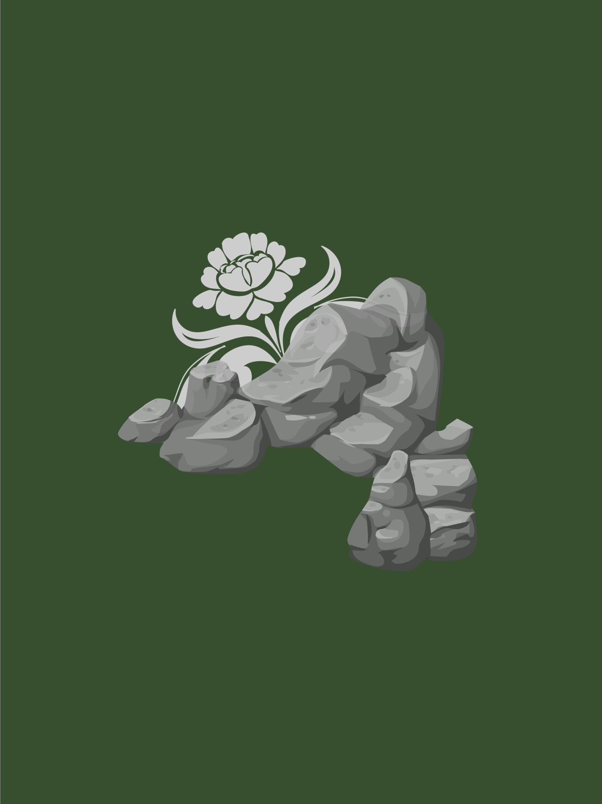
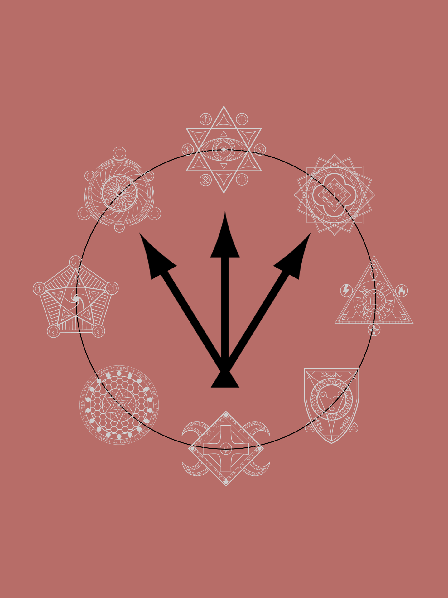
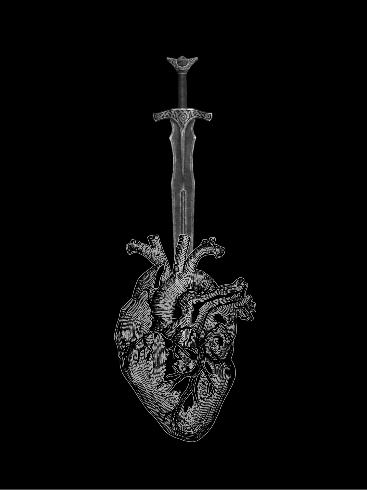

Welcome to the Agate Coast



Factions
Broken Gulf Sailing Company
Order of the Sacred Earth
Scholars League
Shining Swords Mercenary Company
Locations
Broken Gulf Sailing Company
Order of the Sacred Earth
Scholars League
Shining Swords Mercenary Company
Player Characters
Loot Table
Non-Player Characters
Broken Gulf Sailing Company
Order of the Sacred Earth
Scholars League
Shining Swords Mercenary Company